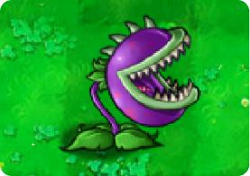

Back to Plants

Chomper
 150
150
 Massive
Massive
 Fast
Fast
 Normal
Normal
Level Acquired:
Level 1-7
Chompers can devourazombie whole, but they are vulnerable while chewing.
Chomper almost got a gig doing stunts for The Little Shop of Horrors but it fell through when his agent demanded too much on the front end. Chomper's not resentful, though. He says it's just part of the business.
Plant Description
- Chomper is a multi-use instant-kill plant appearing in Plants vs. Zombies.
- He can eat zombies whole, killing them instantly, but is vulnerable to attacks when chewing.
- After eating an enemy, Chomper will require 42 seconds before he can eat another, making him vulnerable, exposing itself to other zombies' attacks in the process.
Strategies
- Chomper's main value in the plant arsenal is found in his ability to instantly devour tougher zombies such as Buckethead Zombies, Zombonis, and Football Zombies, who would otherwise be able to soak up a considerable amount of damage and allow their comrades to advance. However, this comes at a great price, as Chomper will be rendered inactive for a very long while and exposing himself to attacks after devouring an enemy, regardless of who the victim was - a basic Zombie and a Football Zombie will take the same amount of time to be digested. Chomper also has dismal performance against Gargantuars, due to his low range and bite damage.